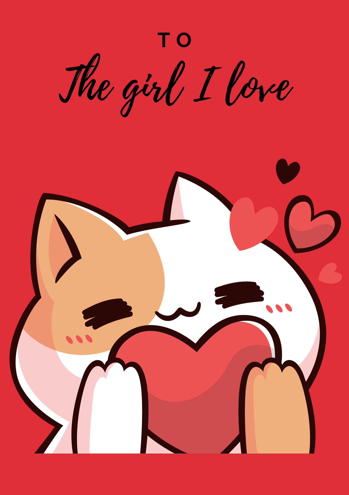
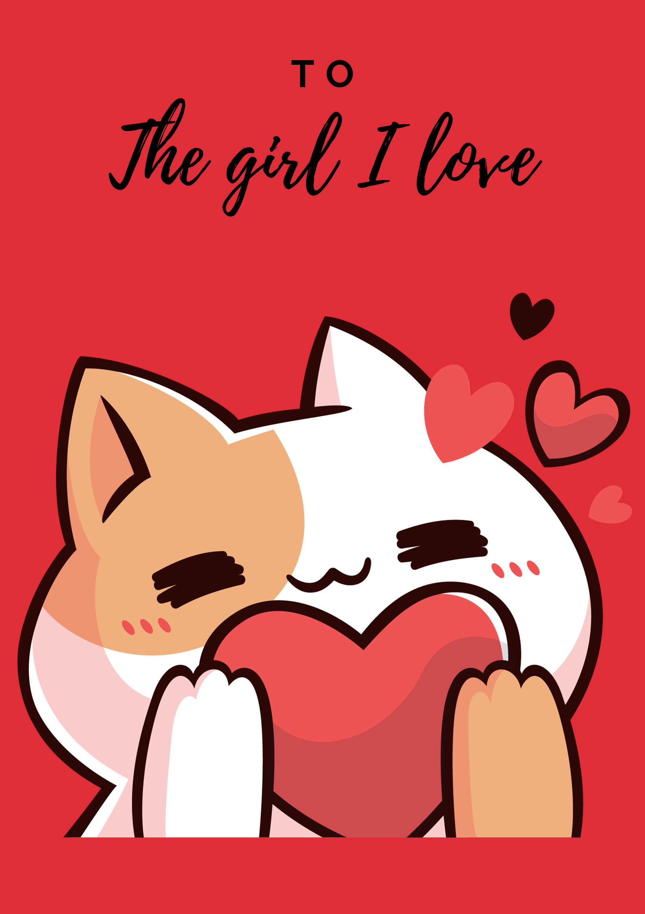

Click to open me!
Cũng gần 2 năm tụi mình bắt đầu nói chuyện và gặp gỡ nhau rồi nhỉ. Anh cũng không biết bắt đầu từ đâu nhưng mà ở bức thư này anh muốn nói với em một điều mà anh luôn ấp ủ bấy lâu nay. Anh thật sự nghiêm túc khi nói điều này với em, anh cũng đã từng nói với em trước đây anh thích em vì có những lý do vì em thông minh, tinh tế, dễ thương, … Nhưng bây giờ thì, kể cả khi không có những lý do đó anh vẫn thích em. Anh thích em vì em là chính em chứ không vì một lý do nào cả. Em đã luôn là lý do mà anh ở lại, anh thích em kể cả những lần em cáu gắt với anh, thích luôn cả tính cách thất thường của em, anh thích tất cả tính tốt lẫn tính chưa tốt của em chỉ đơn giản bởi vì đó là em. Anh muốn được phát triển cùng em, muốn được cùng em trở nên tốt hơn, muốn được che chở cho em, hổ trợ em mỗi khi em gặp khó khăn, tuy anh biết là một mình em vẫn có thể làm được hầu như tất cả nhưng mà anh vẫn muốn làm cùng em, anh muốn trở thành một người đồng hành cùng em.
Anh đã thích em của quá khứ, thích em ở hiện tại và cũng sẽ thích em vào tương lai. Nếu như em muốn mọi chuyện tiến triển chậm rải thì anh mong rằng anh sẽ có được một cơ hội bước vào một mối quan hệ tìm hiểu với em. Thế nên là liệu em có đồng ý để anh làm người yêu của em chứ ?
Love,
Triết